<!DOCTYPE html>
<html lang="en">
<head>
    <title>SPARQL</title>
    <meta charset="utf-8">
    <meta name="viewport" content="width=device-width, initial-scale=1">
    <link rel="stylesheet" href="../ShowerTemplate/shower/themes/ribbon/styles/styles.css">
    <style>
        .shower {
            --slide-ratio: calc(16 / 9);
        }
    </style>
    <script src="https://polyfill.io/v3/polyfill.min.js?features=es6"></script>
    <script id="MathJax-script" async
            src="https://cdn.jsdelivr.net/npm/mathjax@3/es5/tex-mml-chtml.js">
    </script>
</head>
<body class="shower list">

    <header class="caption">
        <h1>SPARQL</h1>
        <p>Mikel Egaña Aranguren</p>
    </header>

    <section class="slide" id="cover">
        <h2>SPARQL</h2>
        <p>Mikel Egaña Aranguren</p>
        <p><a href="https://mikel-egana-aranguren.github.io/">mikel-egana-aranguren.github.io</a></p>
        <p><a href="mailto:mikel.egana@ehu.eus">mikel.egana@ehu.eus</a></p>
        
    </section>

    <section class="slide">
        <h2>SPARQL</h2>
        <p><a href="https://github.com/mikel-egana-aranguren/ABD">https://github.com/mikel-egana-aranguren/ABD</a></p>
        
    </section>

    <section class="slide">
        <h2>SPARQL</h2>
        <p><b>S</b>PARQL <b>P</b>rotocol and <b>R</b>DF <b>Q</b>uery <b>L</b>anguage</p>
        <p>Estándar <a href="https://www.w3.org/TR/sparql11-overview/">oficial del W3C</a></p>
    </section>

    <section class="slide">
        <h2>SPARQL</h2>
        <p>Hacer <a href="https://www.w3.org/TR/2013/REC-sparql11-query-20130321/">consultas</a> sobre grafos RDF</p>
        <p><a href="https://www.w3.org/TR/2013/REC-sparql11-update-20130321/">Modificar datos RDF</a> o <a href="https://www.w3.org/TR/2013/REC-sparql11-http-rdf-update-20130321/">gestionar grafos RDF</a></p>
        <p>Ejecutar SPARQL <a href="https://www.w3.org/TR/2013/REC-sparql11-protocol-20130321/">sobre HTTP</a></p>
    </section>

        <section class="slide">
        <h2>SPARQL</h2>
        <p><a href="https://www.w3.org/TR/2013/REC-sparql11-service-description-20130321/">Describir</a> SPARQL endpoints en RDF y por lo tanto descubrirlos</p>
        <p><a href="https://www.w3.org/TR/2013/REC-sparql11-federated-query-20130321/">Federar distintos SPARQL endpoints</a></p>
    </section>

    <!-- <section class="slide">
        <h2>SPARQL</h2>
        <p>Empresas que piden conocimiento de SPARQL: <a href="https://sparql.club/">https://sparql.club/</a>  (Datos de indeed.com y monster.com)</p>
        <p>Libros: <a href="https://www.learningsparql.com/">https://www.learningsparql.com/</a></p>
    </section> -->

    <section class="slide">
        <h2>SPARQL</h2>
        <p></p>
    </section>

    <section class="slide">
        <h2>SPARQL</h2>
        <p></p>
    </section>

    <section class="slide">
        <h2>Estructura de la consulta (Cambiar dataset a labo RDF - describir )</h2>
        (Subir <a href="Museoak.rdf">museoak.rdf</a> a GraphDB)
        (<a href="1.rq">1.rq</a>)
        <p>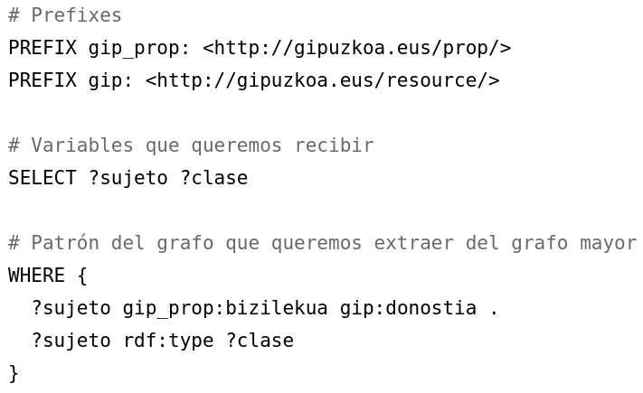</p>
    </section>

    <section class="slide">
        <h2>Estructura de la consulta</h2>
        (<a href="2.rq">2.rq</a>)
        <p>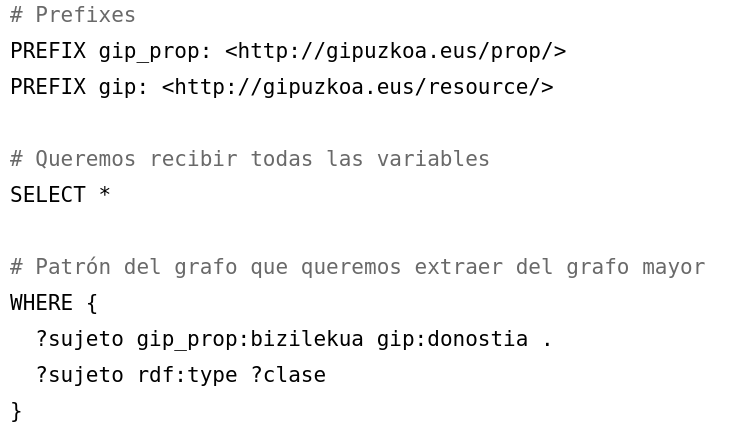</p>
    </section>

    <section class="slide">
        <h2>Optional</h2>
        (<a href="3.rq">3.rq</a>)
        <p>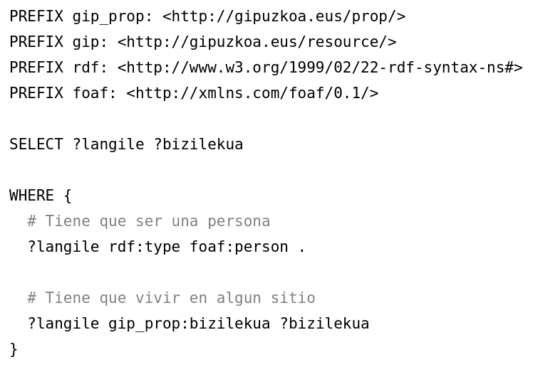</p>
    </section>

    <section class="slide">
        <h2>Optional</h2>
        (<a href="4.rq">4.rq</a>)
        <p>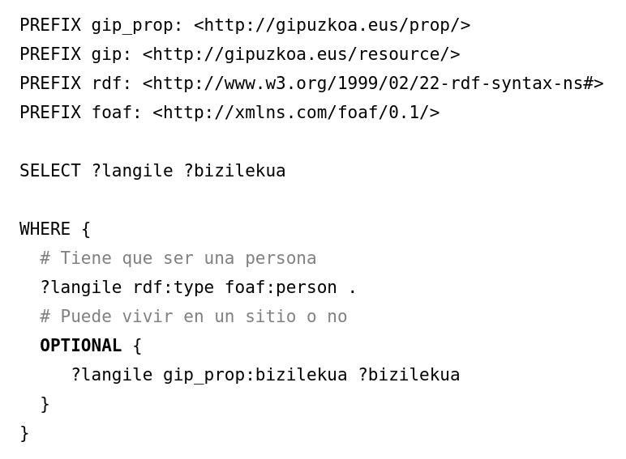</p>
    </section>

    <section class="slide">
        <h2>Union</h2>
        (<a href="5.rq">5.rq</a>)
        <p>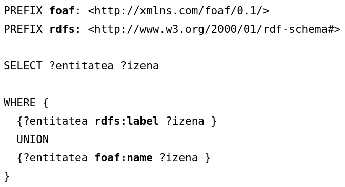</p>
    </section>

    <section class="slide">
        <h2>Ordenar resultados</h2>
        (<a href="6.rq">6.rq</a>)
        <p>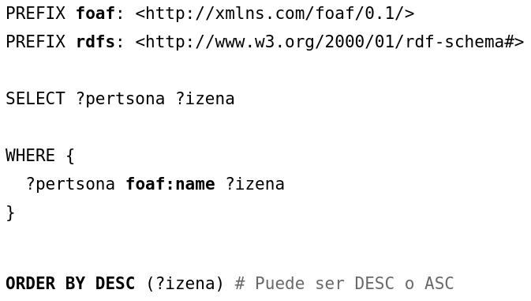</p>
    </section>

    <section class="slide">
        <h2>Limitar resultados</h2>
        (<a href="7.rq">7.rq</a>)
        <p>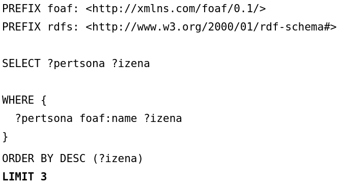</p>
    </section>

    <section class="slide">
        <h2>Paginación</h2>
        (<a href="8.rq">8.rq</a>)
        <p></p>
    </section>

    <section class="slide">
        <h2>Paginación</h2>
        (<a href="9.rq">9.rq</a>)
        <p>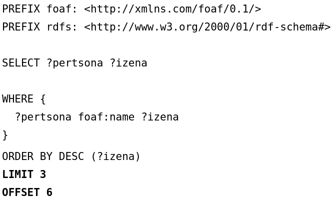</p>
    </section>

    <section class="slide">
        <h2>Filtrar resultados</h2>
        (<a href="10.rq">10.rq</a>)
        <p>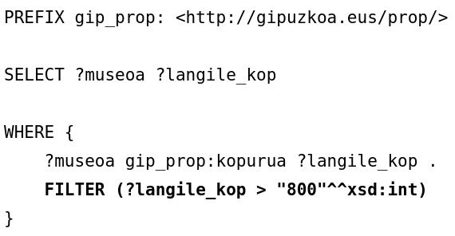</p>
    </section>

    <section class="slide">
        <h2>Filtrar resultados</h2>
        (<a href="11.rq">11.rq</a>)
        <p>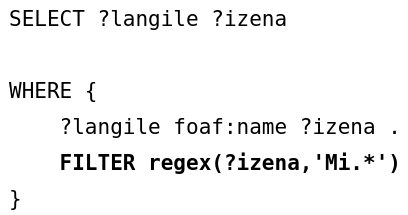</p>
    </section>

    <section class="slide">
        <h2>Filtrar resultados</h2>
        <p>Lógica: !, &&, ||</p>
        <p>Cálculos: +, -, *, /</p>
        <p>Comparaciones: =, !=, >,<</p>
    </section>

    <section class="slide">
        <h2>Filtrar resultados</h2>
        <p>Tests SPARQL: isURI, isBlank, isLiteral, bound</p>
        <p>Acceder a datos: str, lang, datatype</p>
        <p>Más: sameTerm, langMatches, regex, ...</p>
    </section>

    <section class="slide">
        <h2>Evitar duplicados EJEMPLO con graficos!!!!!</h2>
        (<a href="12.rq">12.rq</a>)
        <p>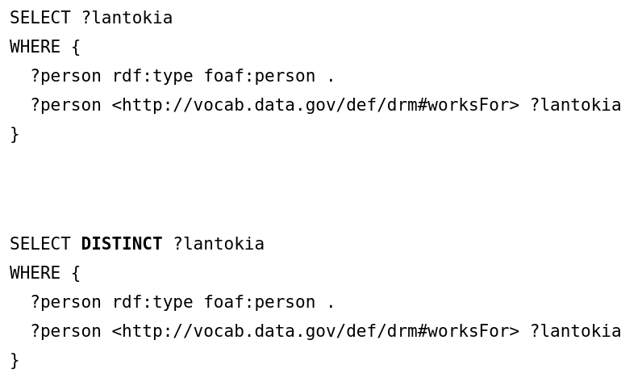</p>
    </section>

    <section class="slide">
        <h2>Ask</h2>
        (<a href="13.rq">13.rq</a>)
        <p>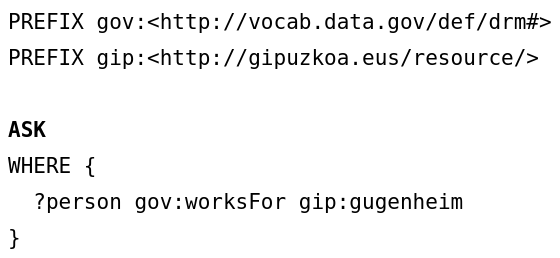</p>
    </section>

    <section class="slide">
        <h2>Describe</h2>
        <p><pre><code>DESCRIBE &lt;http://gipuzkoa.eus/resource/mikel-aranguren&gt;</code></pre></p>
    </section>

    <section class="slide">
        <h2>CONSTRUCT</h2>
        (<a href="14.rq">14.rq</a>)
        <p>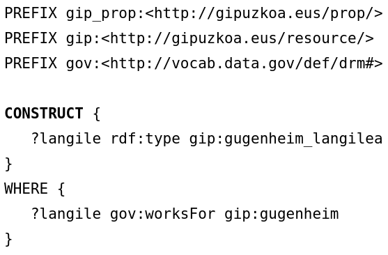</p>
    </section>

    <section class="slide">
        <h2>Delete data</h2>
        <p><pre><code>DELETE DATA {
            &lt;http://gipuzkoa.eus/resource/aitor-labajo&gt; 
                rdf:type foaf:person
          }</code></pre></p>
          <p>DESCRIBE &lt;http://gipuzkoa.eus/resource/aitor-labajo&gt;</p>
    </section>

    <section class="slide">
        <h2>Delete</h2>
        <pre><code>
            DELETE {?person rdf:type foaf:person}
            WHERE {?person foaf:name ?name}
            SELECT * WHERE {
                   ?person rdf:type foaf:person
                }
                </code></pre>
    </section>

    <section class="slide">
        <h2>INSERT DATA</h2>
        <pre><code>
        PREFIX gip:&lt;http://gipuzkoa.eus/resource/&gt;
        INSERT DATA {
            gip:aitor-labajo rdf:type gip:hiritar
        }
        DESCRIBE gip:aitor-labajo
        </code></pre>
    </section>

    <section class="slide">
        <h2>INSERT</h2>
        (<a href="15.rq">15.rq</a>)
        <p>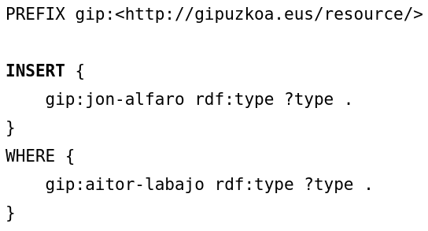</p>
        <p>DESCRIBE &lt;http://gipuzkoa.eus/resource/jon-alfaro&gt;</p>
    </section>

    <section class="slide">
        <h2>GRAFOS</h2>
        <p>Grafo: conjunto de triples</p>
        <p>El conjunto entero se identifica con una URI (diferente de la de los datos)</p>
        <p>Todas las Triple Stores tienen un Default Graph</p>
    </section>

    <section class="slide">
        <h2>GRAFOS</h2>
        <p>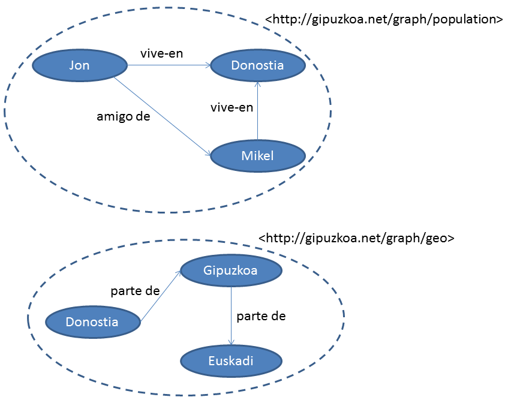</p>
    </section>

    <section class="slide">
        <h2>GRAFOS</h2>
        <p>Los grafos son muy útiles para añadir metadatos (entre otras cosas): ej. procedencia, autoría, fecha de generación</p>
        <p><a href="https://www.w3.org/TR/prov-o/">PROV-O</a>, <a href="https://www.w3.org/TR/vocab-dcat-3/">DCAT</a>, ...</p>
    </section>

    <section class="slide">
        <h2>GRAFOS</h2>
        <p>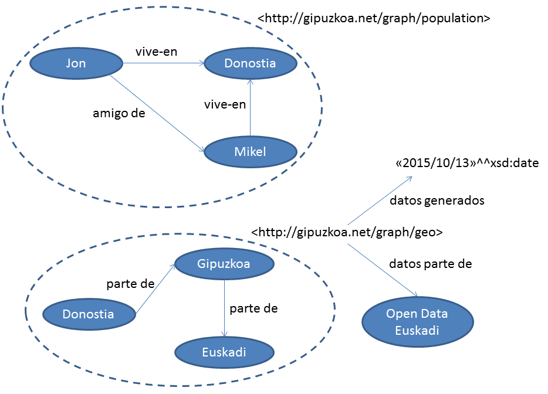</p>
    </section>

    <section class="slide">
        <h2>GRAFOS</h2>
        (<a href="17.rq">17.rq</a>)
        <p>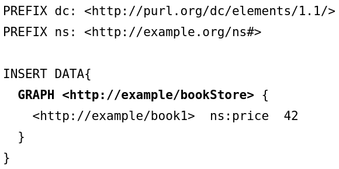</p>
    </section>

    <section class="slide">
        <h2>GRAFOS</h2>
        (<a href="18.rq">18.rq</a>)
        <p>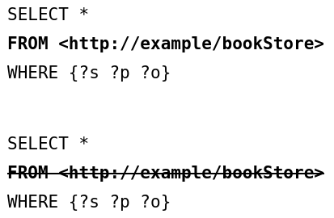</p>
    </section>

    <section class="slide">
        <h2>Consultas federadas</h2>
        (<a href="16.rq">16.rq</a>)
        <p>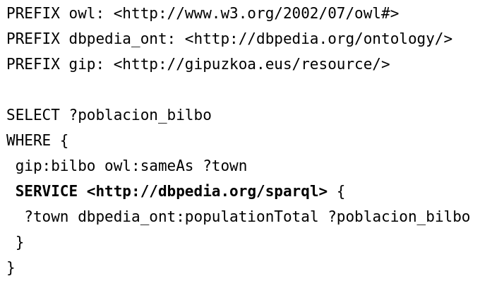</p>
        (bilbo_wikidata.ttl)
    </section>

    <section class="slide">
        <h2>SPARQL Aggregate Functions</h2>
        <p>Funciones de agregación para calcular valores sobre grupos:</p>
        <p>COUNT: contar elementos</p>
        <p>SUM: suma de valores</p>
        <p>AVG: promedio</p>
        <p>MIN / MAX: mínimo y máximo</p>
        <p>GROUP_CONCAT: concatenar valores</p>
        <p>SAMPLE: obtener un valor de ejemplo</p>
    </section>

    <section class="slide">
        <h2>COUNT - Ejemplo</h2>
        <pre><code>PREFIX foaf: &lt;http://xmlns.com/foaf/0.1/&gt;

SELECT (COUNT(?person) AS ?total)
WHERE {
    ?person rdf:type foaf:Person
}</code></pre>
        <p>Cuenta el número total de personas en el grafo</p>
    </section>

    <section class="slide">
        <h2>GROUP BY</h2>
        <p>Agrupar resultados por valores de una variable</p>
        <pre><code>SELECT ?ciudad (COUNT(?museo) AS ?numMuseos)
WHERE {
    ?museo rdf:type ex:Museo ;
           ex:ubicadoEn ?ciudad
}
GROUP BY ?ciudad
ORDER BY DESC(?numMuseos)</code></pre>
        <p>Cuenta museos por ciudad</p>
    </section>

    <section class="slide">
        <h2>HAVING</h2>
        <p>Filtrar grupos después de la agregación</p>
        <pre><code>SELECT ?ciudad (COUNT(?museo) AS ?numMuseos)
WHERE {
    ?museo rdf:type ex:Museo ;
           ex:ubicadoEn ?ciudad
}
GROUP BY ?ciudad
HAVING (COUNT(?museo) > 5)
ORDER BY DESC(?numMuseos)</code></pre>
        <p>Solo ciudades con más de 5 museos</p>
    </section>

    <section class="slide">
        <h2>BIND</h2>
        <p>Asignar valores a variables dentro de la consulta</p>
        <pre><code>SELECT ?person ?fullName
WHERE {
    ?person foaf:firstName ?first ;
            foaf:lastName ?last .
    BIND(CONCAT(?first, " ", ?last) AS ?fullName)
}</code></pre>
        <p>Combina nombre y apellido en una variable</p>
    </section>

    <section class="slide">
        <h2>Funciones de cadenas</h2>
        <p>CONCAT: concatenar strings</p>
        <p>STRLEN: longitud de string</p>
        <p>SUBSTR: subcadena</p>
        <p>UCASE / LCASE: mayúsculas / minúsculas</p>
        <p>STRSTARTS / STRENDS / CONTAINS: búsqueda en strings</p>
        <p>REPLACE: reemplazar texto</p>
        <p>REGEX: expresiones regulares</p>
    </section>

    <section class="slide">
        <h2>REGEX - Ejemplo</h2>
        <pre><code>SELECT ?museo ?nombre
WHERE {
    ?museo rdf:type ex:Museo ;
           foaf:name ?nombre .
    FILTER REGEX(?nombre, "arte", "i")
}</code></pre>
        <p>Encuentra museos con "arte" en el nombre (case-insensitive)</p>
    </section>

    <section class="slide">
        <h2>Funciones numéricas</h2>
        <p>ABS: valor absoluto</p>
        <p>ROUND / CEIL / FLOOR: redondeo</p>
        <p>RAND: número aleatorio</p>
        <p>Operadores: +, -, *, /</p>
        <pre><code>SELECT ?price (?price * 1.21 AS ?priceWithVAT)
WHERE {
    ?item ex:price ?price
}</code></pre>
    </section>

    <section class="slide">
        <h2>Funciones de fecha/hora</h2>
        <p>NOW(): fecha y hora actual</p>
        <p>YEAR / MONTH / DAY: extraer componentes</p>
        <p>HOURS / MINUTES / SECONDS: hora específica</p>
        <pre><code>SELECT ?event ?date
WHERE {
    ?event ex:date ?date .
    FILTER (YEAR(?date) = 2025)
}</code></pre>
    </section>

    <section class="slide">
        <h2>VALUES</h2>
        <p>Proporcionar valores inline para variables</p>
        <pre><code>SELECT ?city ?population
WHERE {
    VALUES ?city {
        &lt;http://dbpedia.org/resource/Bilbao&gt;
        &lt;http://dbpedia.org/resource/Donostia&gt;
    }
    ?city dbo:population ?population
}</code></pre>
        <p>Útil para consultas parametrizadas</p>
    </section>

    <section class="slide">
        <h2>MINUS</h2>
        <p>Excluir resultados que coinciden con un patrón</p>
        <pre><code>SELECT ?person
WHERE {
    ?person rdf:type foaf:Person .
    MINUS {
        ?person foaf:age ?age .
        FILTER (?age < 18)
    }
}</code></pre>
        <p>Personas que no son menores de edad</p>
    </section>

    <section class="slide">
        <h2>NOT EXISTS</h2>
        <p>Filtrar basándose en la no existencia de un patrón</p>
        <pre><code>SELECT ?person
WHERE {
    ?person rdf:type foaf:Person .
    FILTER NOT EXISTS {
        ?person foaf:email ?email
    }
}</code></pre>
        <p>Personas sin email registrado</p>
    </section>

    <section class="slide">
        <h2>EXISTS vs MINUS</h2>
        <p>EXISTS/NOT EXISTS: filtro, no elimina bindings</p>
        <p>MINUS: elimina soluciones completas</p>
        <p>NOT EXISTS es más eficiente para validación</p>
        <p>MINUS es más útil para exclusión de patrones complejos</p>
    </section>

    <section class="slide">
        <h2>Property Paths</h2>
        <p>Expresiones de caminos entre nodos:</p>
        <p>^: inverso (ex:parent^ encuentra hijos)</p>
        <p>*: cero o más (ex:knows* para red de conocidos)</p>
        <p>+: uno o más (ex:subClassOf+ para jerarquía)</p>
        <p>?: opcional (cero o uno)</p>
        <p>|: alternativa (ex:email|ex:phone)</p>
        <p>/: secuencia (ex:livesIn/ex:country)</p>
    </section>

    <section class="slide">
        <h2>Property Paths - Ejemplo</h2>
        <pre><code>SELECT ?person ?ancestor
WHERE {
    ?person foaf:name "Mikel" .
    ?person ex:parent+ ?ancestor
}</code></pre>
        <p>Encuentra todos los ancestros (padres, abuelos, etc.)</p>
    </section>

    <section class="slide">
        <h2>Negated Property Sets</h2>
        <p>Excluir propiedades específicas en property paths</p>
        <pre><code>SELECT ?subject ?object
WHERE {
    ?subject !rdf:type ?object
}</code></pre>
        <p>Cualquier relación excepto rdf:type</p>
    </section>

    <section class="slide">
        <h2>SPARQL UPDATE</h2>
        <p>Operaciones de modificación de grafos:</p>
        <p>INSERT DATA: insertar triples directamente</p>
        <p>DELETE DATA: eliminar triples específicos</p>
        <p>DELETE/INSERT: basado en patrones WHERE</p>
        <p>LOAD: cargar RDF desde URI</p>
        <p>CLEAR: eliminar todo un grafo</p>
        <p>CREATE / DROP: gestionar grafos</p>
    </section>

    <section class="slide">
        <h2>DELETE/INSERT combinado</h2>
        <pre><code>DELETE { ?person ex:email ?oldEmail }
INSERT { ?person ex:email ?newEmail }
WHERE {
    ?person foaf:name "Mikel" ;
            ex:email ?oldEmail .
    BIND("mikel@new.com" AS ?newEmail)
}</code></pre>
        <p>Actualizar email de manera transaccional</p>
    </section>

    <section class="slide">
        <h2>COPY / MOVE / ADD</h2>
        <p>COPY: copiar un grafo a otro (sobreescribe destino)</p>
        <p>MOVE: mover grafo (copia + elimina origen)</p>
        <p>ADD: añadir triples al destino (sin sobreescribir)</p>
        <pre><code>COPY GRAPH &lt;http://example.org/graph1&gt; 
TO GRAPH &lt;http://example.org/graph2&gt;</code></pre>
    </section>

    <section class="slide">
        <h2>SPARQL Endpoints públicos</h2>
        <p><a href="https://query.wikidata.org/">Wikidata Query Service</a>: millones de entidades</p>
        <p><a href="https://dbpedia.org/sparql">DBpedia SPARQL</a>: Wikipedia estructurada</p>
        <p><a href="https://sparql.uniprot.org/">UniProt SPARQL</a>: proteínas y genes</p>
        <p><a href="https://www.ebi.ac.uk/rdf/services/sparql">EBI RDF Platform</a>: bioinformática</p>
        <p><a href="https://datos.gob.es/es/sparql">datos.gob.es</a>: open data España Open Data euskadi</p>
    </section>

    <section class="slide">
        <h2>SPARQL 1.1 Protocol</h2>
        <p>HTTP GET con parámetro query:</p>
        <p><code>GET /sparql?query=SELECT...</code></p>
        <p>HTTP POST (para queries largas):</p>
        <p><code>POST /sparql</code> con body URL-encoded</p>
        <p>Content negotiation: Accept header</p>
        <p>Formatos: application/sparql-results+json, text/csv, application/rdf+xml, text/turtle</p>
    </section>

    <section class="slide">
        <h2>SPARQL desde código</h2>
        <p>Python: <a href="https://rdflib.readthedocs.io/">RDFLib</a>, <a href="https://sparqlwrapper.readthedocs.io/">SPARQLWrapper</a></p>
        <p>Java: <a href="https://jena.apache.org/">Apache Jena</a>, <a href="https://rdf4j.org/">RDF4J</a></p>
        <p>JavaScript: <a href="https://github.com/RubenVerborgh/SPARQL.js">SPARQL.js</a></p>
        <p>R: <a href="https://github.com/cran/SPARQL">SPARQL package</a></p>
    </section>

    <section class="slide">
        <h2>SPARQLWrapper - Ejemplo Python</h2>
        <pre><code>from SPARQLWrapper import SPARQLWrapper, JSON

sparql = SPARQLWrapper("https://query.wikidata.org/sparql")
sparql.setQuery("""
    SELECT ?city ?cityLabel WHERE {
        ?city wdt:P31 wd:Q515 .
        SERVICE wikibase:label { 
            bd:serviceParam wikibase:language "en" 
        }
    } LIMIT 10
""")
sparql.setReturnFormat(JSON)
results = sparql.query().convert()</code></pre>
    </section>

    <section class="slide">
        <h2>SPARQL Performance: Buenas prácticas</h2>
        <p>Usar LIMIT para pruebas y desarrollo</p>
        <p>Poner filtros más restrictivos primero</p>
        <p>Evitar OPTIONAL innecesarios (costosos)</p>
        <p>Usar FILTER lo más pronto posible en WHERE</p>
        <p>Aprovechar índices: triple patterns específicos</p>
        <p>Evitar regex complejos si es posible</p>
    </section>

    <section class="slide">
        <h2>SPARQL y razonamiento</h2>
        <p>Razonamiento en tiempo de carga: materialización</p>
        <p>Razonamiento en tiempo de consulta: inferencia dinámica</p>
        <p>GraphDB: soporta ambos modos</p>
        <p>SPARQL puede consultar triples inferidos por OWL/RDFS</p>
        <p>Entailment regimes: RDF, RDFS, OWL Direct, OWL RDF-Based</p>
    </section>

    <section class="slide">
        <h2>SPARQL 1.1 Service Description</h2>
        <p>Metadatos sobre el endpoint SPARQL</p>
        <p>Descubrir capacidades del servidor</p>
        <pre><code>SELECT * WHERE {
    &lt;http://example.org/sparql&gt; ?p ?o
}</code></pre>
        <p>Información: datasets, grafos, extensiones, límites</p>
    </section>

    <section class="slide">
        <h2>SPARQL GeoSPARQL</h2>
        <p>Extensión para consultas geoespaciales</p>
        <p>Funciones: geof:distance, geof:within, geof:intersects</p>
        <pre><code>SELECT ?place ?location WHERE {
    ?place geo:hasGeometry/geo:asWKT ?location .
    FILTER(geof:distance(?location, "POINT(2.17 41.39)"^^geo:wktLiteral) < 10)
}</code></pre>
        <p>Encuentra lugares a menos de 10km de Barcelona</p>
    </section>

    <section class="slide">
        <h2>SPARQL Full-Text Search</h2>
        <p>Extensión para búsqueda de texto (no estándar)</p>
        <p>GraphDB: <code>PREFIX luc: &lt;http://www.ontotext.com/connectors/lucene#&gt;</code></p>
        <pre><code>SELECT ?person ?name ?score WHERE {
    ?search a luc:index ;
            luc:query "Mikel*" ;
            luc:entities ?person ;
            luc:score ?score .
    ?person foaf:name ?name
}</code></pre>
    </section>

    <section class="slide">
        <h2>SPARQL Debugging</h2>
        <p>Construir query incrementalmente</p>
        <p>Usar SELECT * para ver todas las variables</p>
        <p>Comentar cláusulas (# comentario)</p>
        <p>LIMIT pequeño durante desarrollo</p>
        <p>Herramientas: <a href="https://yasgui.triply.cc/">YASGUI</a> (editor online)</p>
        <p>Explicar plan de ejecución (vendor-specific)</p>
    </section>

    <section class="slide">
        <h2>SPARQL vs SQL</h2>
        <p>Similitudes: SELECT, WHERE, FILTER (WHERE), ORDER BY, LIMIT</p>
        <p>Diferencias:
            <ul>
                <li>SPARQL: patrón de grafos; SQL: tablas relacionales</li>
                <li>SPARQL: datos distribuidos, federación; SQL: local</li>
                <li>SPARQL: esquema flexible; SQL: esquema rígido</li>
                <li>SPARQL: URIs globales; SQL: IDs locales</li>
            </ul>
        </p>
    </section>

    <section class="slide">
        <h2>Cómo lograr un UPSERT en triplestores</h2>
        <ol>
            <li>Carga el delta en un grafo de “staging”.</li>
            <li>Ejecuta SPARQL Update: DELETE de valores antiguos + INSERT de los nuevos.</li>
        </ol>
        <p>Patrón común: GraphDB, Fuseki/Jena, Virtuoso, Stardog, etc.</p>
    </section>

    <section class="slide">
        <h2>Ejemplo: DELETE/INSERT dirigido</h2>
        <pre style="font-size:14px; line-height:1.4; overflow:auto; background:#f7f7f7; padding:8px;">
PREFIX ex: <http://www.example.com/>

# 1) Delta en grafo de staging con el nuevo color
# GRAPH &lt;staging&gt;:  ex:mi_mascota ex:color "negro"

# 2) Update dirigido sobre el grafo objetivo
WITH &lt;mascotas&gt;
DELETE { ?s ex:color ?old }
INSERT { ?s ex:color "negro" }
WHERE  {
  GRAPH &lt;staging&gt; { ?s ex:color "negro" }
  OPTIONAL { ?s ex:color ?old }
  FILTER( !bound(?old) || ?old != "negro" )
}
        </pre>
        <p>Idea: borrar valores previos de los sujetos afectados e insertar el nuevo.</p>

        Como detectar que hay que actualizar? En SQL se asume que cada fila tiene un solo valor
        para cada columna, pero en RDF un sujeto puede tener múltiples valores para una propiedad
        OWL functional property para detectar
        SHACL para detectar
        RDF-star para marcar el triple como de "valor unico"
    </section>


    <section class="slide">
        <h2>Recursos para aprender SPARQL</h2>
        <p><a href="https://www.w3.org/TR/sparql11-query/">SPARQL 1.1 Specification</a></p>
        <p><a href="https://www.learningsparql.com/">Learning SPARQL (libro)</a></p>
        <p><a href="https://www.wikidata.org/wiki/Wikidata:SPARQL_tutorial">Wikidata SPARQL Tutorial</a></p>
        <p><a href="https://query.wikidata.org/">Wikidata Query Service</a> (con ejemplos)</p>
        <p><a href="https://www.cambridgesemantics.com/blog/semantic-university/learn-sparql/">Cambridge Semantics SPARQL Course</a></p>
    </section>


    <!-- FOOTER -->

    <footer class="badge">
        <a href="https://github.com/mikel-egana-aranguren/ShowerTemplate">Fork me on GitHub</a>
    </footer>

    <div class="progress"></div>

    <script src="../ShowerTemplate/shower/shower.js"></script>
    <!-- Copyright © 3000 Yours Truly, Famous Inc. -->

</body>
</html>
